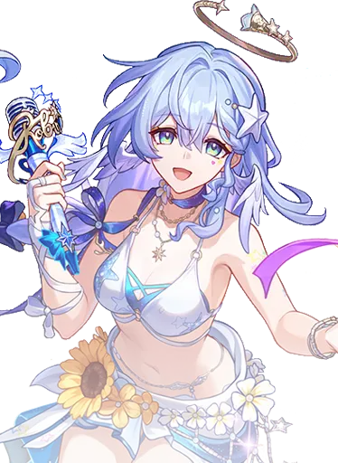

Robin Summeretto
Best Robin Summeretto build guide for Honkai Star Rail. See Robin Summeretto's best Relics, Light Cones, teams, Eidolons, Trace priority, and how to play Robin Summeretto.
🔍 Detail Skill
Semua skill aktif dan pasif beserta efeknya.
Deals Wind DMG equal to #1[i]% of Robin • Summeretto's Max HP to one enemy.
Summons the memosprite Summer Songbirds Bessie. If any among the Summer Songbirds is already on the field, restores its HP by an amount equal to #1[i]% of Summer Songbirds's Max HP, and gains 6 Vibes.
The memosprite Summer Songbirds has an initial Max HP equal to 70% of Robin • Summeretto's Max HP and an initial SPD equal to 180% of Robin • Summeretto's SPD. When an ally target uses an attack, or when providing healing effect or Shield for the first time in any target's turn, Robin • Summeretto gains 1 Vibes, up to a max of 50. While Summer Songbirds Bessie is on the field, if Robin's Vibes is
After using Technique, at the start of the next combat, action advances by 20%, immediately gains 6 Vibes, and grants all allies a 30% DMG Boost for 2 turn(s).
Deals Wind DMG equal to #1[i]% of Summer Songbirds's Max HP to all enemies.
While in the Fever state, the Summer Songbirds and a countdown will appear on the action bar, increasing the DMG dealt by Robin • Summeretto and themselves by #1[i]% + Vibes × #2[i]%. When Summer Songbirds's turn starts, they use the Memosprite Skill. The countdown has an initial SPD of 140. When their turn starts, 50% of current Vibes (a minimum of 12 points) gets deducted. When Vibes reach 0, th
⚔ Light Cone Terbaik
Diurutkan dari yang paling kuat. Persentase menunjukkan performa relatif terhadap pilihan terbaik.
💎 Relic Set Terbaik
Set terbaik untuk karakter ini, diurutkan berdasarkan prioritas.
📊 Stat Utama
Stat yang dicari pada tiap slot.
👥 Tim yang Direkomendasikan
Karakter yang sering dipasangkan bersama Robin Summeretto.
 Hyacine
Hyacine
 Castorice
Castorice
 Himeko Nova
Himeko Nova
 Mortenax Blade
Mortenax Blade
 Aglaea
Aglaea
🔗 Lanjutkan
Build ini dirangkum dari Prydwen Institute. Starwise tidak menghitung sendiri. Angka bisa berubah setelah patch atau karakter baru rilis.